class: center, middle # A PROJECT FOR CALCULATING GROWING DEGREE DAYS (GDD) IN CANADA --- # Introduction The Growing Degree Day, or GDD, is a heat index that can be used to predict when a crop will reach maturity. Each day’s GDD is calculated by subtracting a reference temperature, which varies with plant species, from the daily mean temperature. The reference temperature for a given plant is the temperature below which its development slows or stops. For example, cool season plants, have a reference temperature of 40 degrees fahrenheit while warm season plants, have a reference temperature of 50 degrees fahrenheit. The development of plants depends on the accumulation of heat and since cool season plants have a lower reference temperature, they accumulate GDDs faster than warm season plants. GDUs are accumulated by adding each day’s GDs contribution as the season progresses. --- ### Plot Code 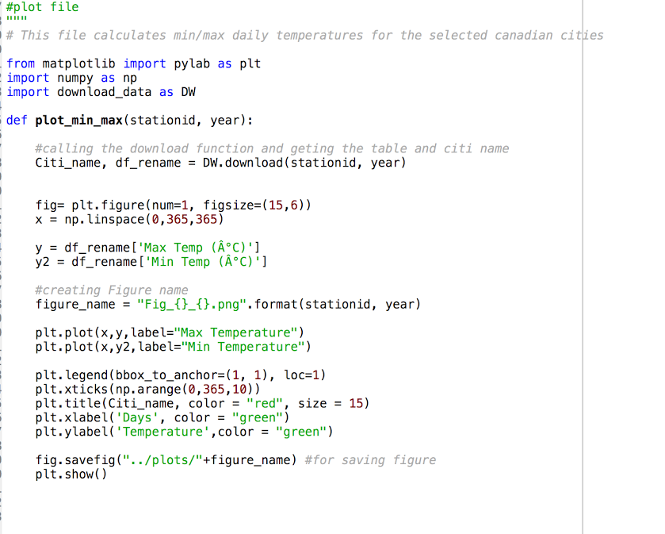 --- ### Data Visualization 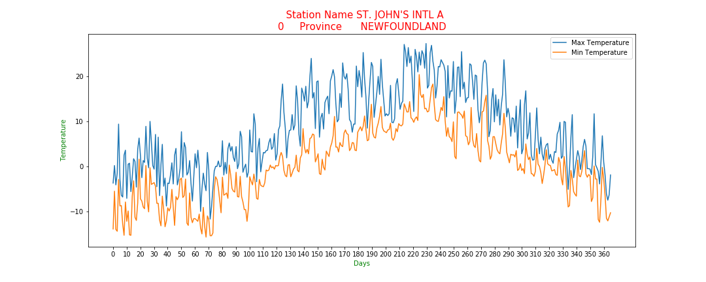 --- ### Data Visualization 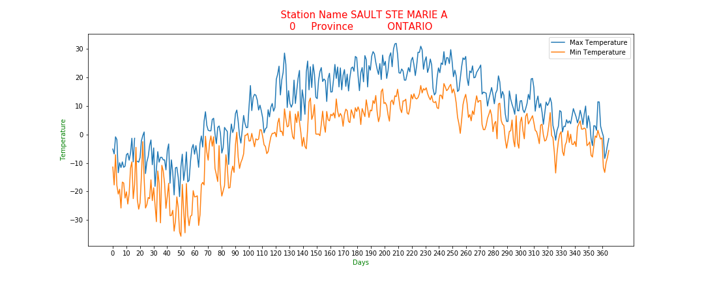 --- ### Code For Download function <img src="1.png" width="720" height="402"/> --- ### Code Cont.. 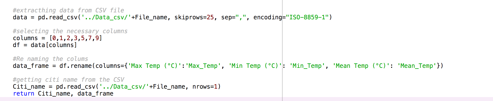 --- ### Example .CSV file 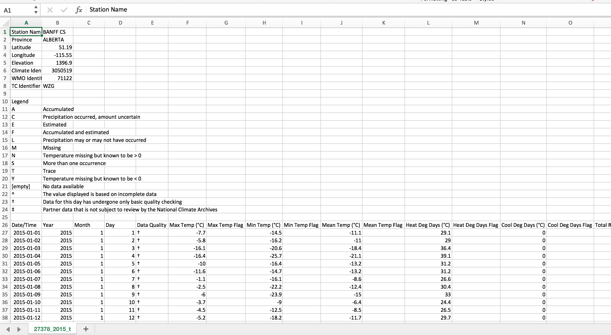 --- # GDD Calculation --- 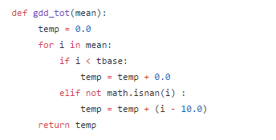 --- 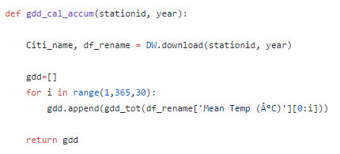 --- 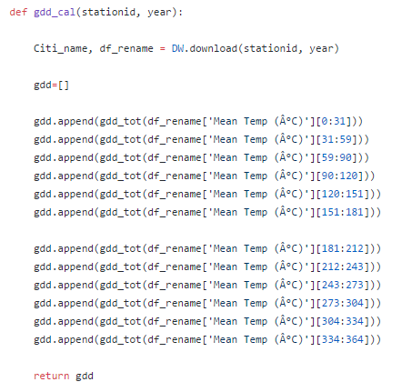 --- 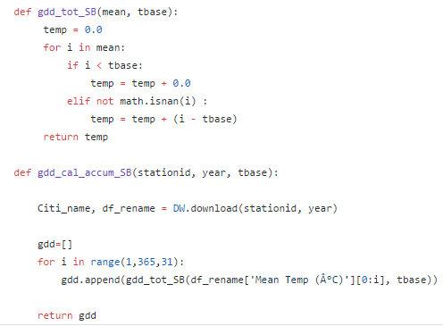 --- # Bokeh Plot --- Gdd Plot <iframe src=plots/Bokeh_GDD_50089.html width="720" height="602"></iframe> --- GDD over Tbase <iframe src=plots/Bokeh_GDD_tbase50092.html width="720" height="602"></iframe> --- Data Visualization: <iframe src=plots/Bokeh_Min-Max_50089.html width="720" height="602"></iframe> --- Min-Max: <iframe src=plots/Bokeh_Min-Max_6842.html width="720" height="602"> </iframe> --- Gdd accumulated: <iframe src=plots/Bokeh_GDD-Accum_27378.html width="720" height="602"></iframe> --- Gdd Plot: <iframe src=plots/Bokeh_GDD_50089.html width="720" height="602"></iframe> --- GDD over Tbase: <iframe src=plots/Bokeh_GDD_tbase50092.html width="720" height="602"></iframe> --- The “main.py” which executes the core task, question 1 of secondary task and question 3 of secondary task, primarily spends it's time downloading data, computing GDD and plotting. Fortunately the task can be parallelized based on cities and years. x1=[stationid1, stationid2, stationid3] y1=[2015, 2014, 2013, 2012] x2=[stationid1, stationid2, stationid3, stationid4] ###calling min_max function P_func1(x1) ###bokeh P_func2(x1) ###calling gdd plot P_func3(y1) ###2nd set for bokeh P_func4(x2) ###Section 2, question 1 def P_func5(x2) ###Section 2, question 3 def P_func6(x2) --- # MULTI PROCESSING EXECUTION ###number of processes Par_comp = Pool(5) Par_comp.map(P_func1, x1), Par_comp.map(P_func2, x1), Par_comp.map(P_func3, y1), Par_comp.map(P_func4, x2), Par_comp.map(P_func5, x2), Par_comp.map(P_func6, x2), 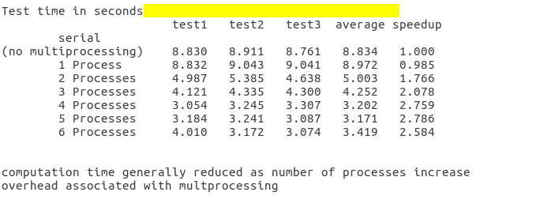 --- 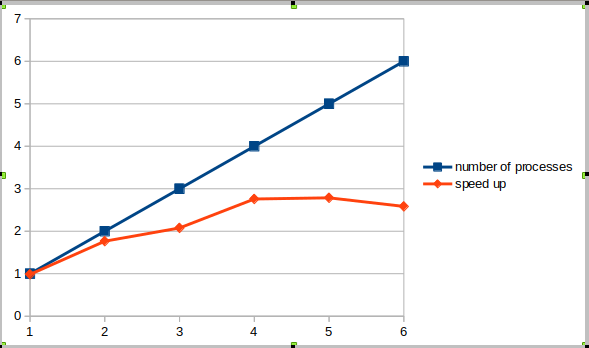 --- # Mark Down-to_Slide HTML Hosting on Github 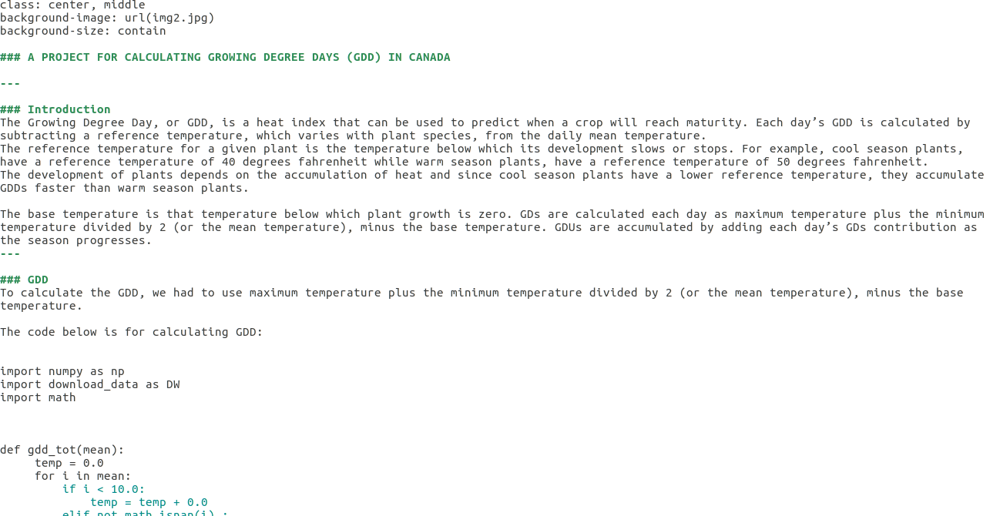 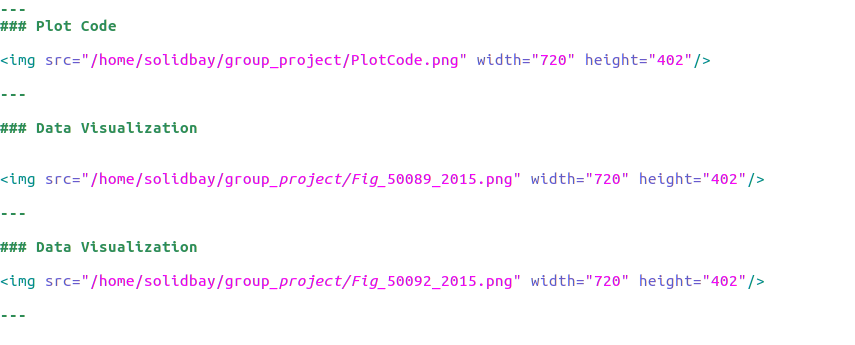 --- # Thank you